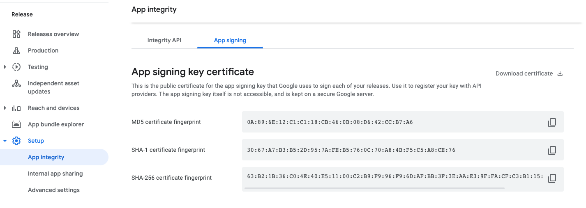
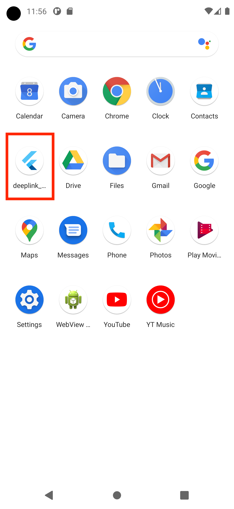
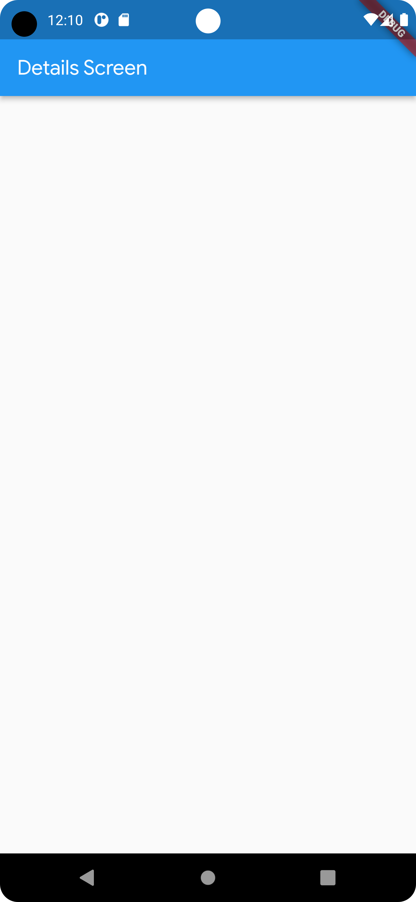
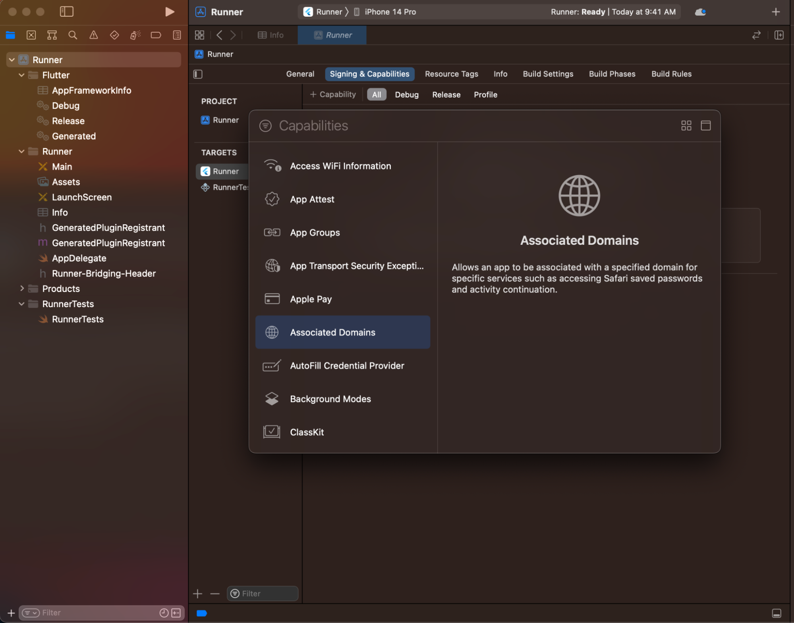
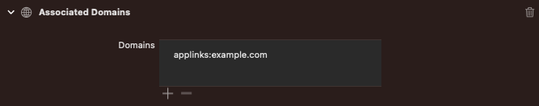

Flutter, ekranlar arasında gezinmek ve derin bağlantıları (deep
links) işlemek için eksiksiz bir sistem sunar. Karmaşık derin bağlantı
gereksinimleri olmayan küçük uygulamalar Navigator
kullanabilirken; Android, iOS ve Web (adres çubuğu senkronizasyonu için)
üzerinde derin bağlantıları doğru şekilde işlemek isteyen uygulamalar
Router yapısını kullanmalıdır.
Navigator widget’ı, ekranları bir yığın (stack) olarak
görüntüler ve hedef platform için doğru geçiş animasyonlarını
kullanır.
Yeni bir ekrana geçmek için, Navigator’a
BuildContext üzerinden erişin ve push() veya
pop() gibi zorunlu (imperative) yöntemleri çağırın:
child: const Text('İkinci ekranı aç'),
onPressed: () {
Navigator.of(context).push(
MaterialPageRoute<void>(
builder: (context) => const SecondScreen(),
),
);
},Navigator, bir Route nesneleri yığını
tutar. MaterialPageRoute, Material Design geçiş
animasyonlarını belirten bir Route alt sınıfıdır.
Basit navigasyon gereksinimleri olan uygulamalar, navigasyon için
Navigator’ı ve derin bağlantılar için
MaterialApp.routes parametresini kullanabilir:
onPressed: () {
Navigator.pushNamed(context, '/second');
},Önemli Not: Çoğu uygulama için isimlendirilmiş rotaların kullanılması önerilmez. İsimlendirilmiş rotalar derin bağlantıları işleyebilse de, davranış her zaman aynıdır ve özelleştirilemez (örneğin tarayıcı geri düğmesi desteği zayıftır). Bunun yerine
go_routergibi bir yönlendirme paketi kullanılması tavsiye edilir.
Gelişmiş navigasyon gereksinimleri olan (örneğin, her ekrana doğrudan
bağlantı kullanan bir web uygulaması) Flutter uygulamaları, rota yolunu
ayrıştırabilen ve uygulama yeni bir derin bağlantı aldığında
Navigator’ı yapılandırabilen go_router gibi
bir yönlendirme paketi kullanmalıdır.
Router kullanmak için, MaterialApp veya
CupertinoApp üzerindeki router kurucusuna
(constructor) geçiş yapın.
go_router gibi paketler genellikle bildirimseldir
(declarative); yani bir derin bağlantı alındığında her zaman aynı ekran
yapısını gösterirler:
child: const Text('İkinci ekranı aç'),
onPressed: () => context.go('/second'),Router ve Navigator birlikte çalışmak üzere
tasarlanmıştır.
Router veya bildirimsel bir paket kullanılarak oluşturulan
rotalardır. Bunlar her zaman derin bağlantı (deep-link) uyumludur.Navigator.push veya showDialog çağrılarak
oluşturulan rotalardır. Bunlar derin bağlantı uyumlu değildir.Navigasyon sırasında bir page-backed rota kaldırıldığında, ondan sonraki tüm pageless rotalar da kaldırılır.
Router sınıfını kullanan uygulamalar, tarayıcının geri
ve ileri düğmelerini kullanırken tutarlı bir deneyim sağlamak için
Tarayıcı Geçmişi API’si (Browser History API) ile entegre olur.
Router kullanarak
her gezindiğinizde, tarayıcının geçmiş yığınına bir giriş eklenir. Geri
düğmesine basmak ters kronolojik navigasyon kullanır;
yani kullanıcı, Router kullanılarak gösterilen bir önceki
konuma geri götürülür.Sekmelerle çalışmak, Material Design yönergelerini izleyen
uygulamalarda yaygın bir modeldir. Flutter, material
kütüphanesinin bir parçası olarak sekme düzenleri oluşturmanın uygun bir
yolunu içerir.
Bu tarif, aşağıdaki adımları kullanarak sekmeli bir örnek oluşturur:
TabController oluşturun.TabController OluşturunSekmelerin çalışması için, seçilen sekmeyi ve içerik bölümlerini
senkronize halde tutmanız gerekir. Bu, TabController’ın
işidir.
Bir TabController’ı manuel olarak veya bir
DefaultTabController widget’ı kullanarak otomatik olarak
oluşturabilirsiniz.
DefaultTabController kullanmak en basit seçenektir,
çünkü bir TabController oluşturur ve onu tüm alt
(descendant) widget’lar için kullanılabilir hale getirir.
return MaterialApp(
home: DefaultTabController(length: 3, child: Scaffold()),
);Bir sekme seçildiğinde, içeriği görüntülemesi gerekir.
TabBar widget’ını kullanarak sekmeler oluşturabilirsiniz.
Bu örnekte, üç Tab widget’ı içeren bir TabBar
oluşturun ve bunu bir AppBar içine yerleştirin.
return MaterialApp(
home: DefaultTabController(
length: 3,
child: Scaffold(
appBar: AppBar(
bottom: const TabBar(
tabs: [
Tab(icon: Icon(Icons.directions_car)),
Tab(icon: Icon(Icons.directions_transit)),
Tab(icon: Icon(Icons.directions_bike)),
],
),
),
),
),
);Varsayılan olarak TabBar, widget ağacında en yakın
DefaultTabController’ı arar. Eğer manuel olarak bir
TabController oluşturuyorsanız, bunu TabBar’a
iletin.
Artık sekmeleriniz olduğuna göre, bir sekme seçildiğinde içeriği
görüntüleyin. Bu amaçla TabBarView widget’ını kullanın.
Not: Sıralama önemlidir ve
TabBar’daki sekmelerin sırasına karşılık gelmelidir.
body: const TabBarView(
children: [
Icon(Icons.directions_car),
Icon(Icons.directions_transit),
Icon(Icons.directions_bike),
],
),import 'package:flutter/material.dart';
void main() {
runApp(const TabBarDemo());
}
class TabBarDemo extends StatelessWidget {
const TabBarDemo({super.key});
@override
Widget build(BuildContext context) {
return MaterialApp(
home: DefaultTabController(
length: 3,
child: Scaffold(
appBar: AppBar(
bottom: const TabBar(
tabs: [
Tab(icon: Icon(Icons.directions_car)),
Tab(icon: Icon(Icons.directions_transit)),
Tab(icon: Icon(Icons.directions_bike)),
],
),
title: const Text('Tabs Demo'),
),
body: const TabBarView(
children: [
Icon(Icons.directions_car),
Icon(Icons.directions_transit),
Icon(Icons.directions_bike),
],
),
),
),
);
}
}Çoğu uygulama, farklı türde bilgileri görüntülemek için birkaç ekran içerir. Örneğin, bir uygulama ürünleri görüntüleyen bir ekrana sahip olabilir. Kullanıcı bir ürünün resmine dokunduğunda, ürünle ilgili ayrıntıları gösteren yeni bir ekran açılır.
Flutter’da ekranlar ve sayfalar rota (route) olarak
adlandırılır. Android’de bir rota Activity’ye, iOS’te ise
ViewController’a eşdeğerdir. Flutter’da ise bir rota sadece
bir widget’tır.
Bu tarif, yeni bir rotaya gitmek için Navigator
kullanır. Aşağıdaki adımlar, iki rota arasında nasıl gezineceğinizi
gösterir:
Navigator.push() kullanarak ikinci rotaya gidin.Navigator.pop() kullanarak birinci rotaya dönün.İlk olarak, üzerinde çalışmak için iki rota oluşturun. Bu temel bir örnek olduğu için her rota yalnızca tek bir düğme içerir.
class FirstRoute extends StatelessWidget {
const FirstRoute({super.key});
@override
Widget build(BuildContext context) {
return Scaffold(
appBar: AppBar(title: const Text('First Route')),
body: Center(
child: ElevatedButton(
child: const Text('Rotayı aç'),
onPressed: () {
// Dokunulduğunda ikinci rotaya git.
},
),
),
);
}
}
class SecondRoute extends StatelessWidget {
const SecondRoute({super.key});
@override
Widget build(BuildContext context) {
return Scaffold(
appBar: AppBar(title: const Text('Second Route')),
body: Center(
child: ElevatedButton(
onPressed: () {
// Dokunulduğunda ilk rotaya geri dön.
},
child: const Text('Geri dön!'),
),
),
);
}
}Navigator.push() kullanarak ikinci rotaya gidinYeni bir rotaya geçmek için Navigator.push() yöntemini
kullanın. push() yöntemi, Navigator tarafından
yönetilen rota yığınına bir Route ekler.
Kendi rotanızı oluşturabilir veya MaterialPageRoute
(Android tarzı) veya CupertinoPageRoute (iOS tarzı) gibi
platforma özgü bir rota kullanabilirsiniz. Platforma özgü bir rota
kullanmak, yeni rotaya geçerken o platforma özgü animasyonu sağladığı
için yararlıdır.
FirstRoute widget’ının build() yönteminde
onPressed() geri çağrısını güncelleyin:
// FirstRoute widget'ı içinde:
onPressed: () {
Navigator.push(
context,
MaterialPageRoute<void>(
builder: (context) => const SecondRoute(),
),
);
}Navigator.pop() kullanarak birinci rotaya dönünİkinci rotayı kapatıp birinciye nasıl dönersiniz?
Navigator.pop() yöntemini kullanarak. pop()
yöntemi, geçerli Route’u Navigator tarafından
yönetilen rota yığınından kaldırır.
Orijinal rotaya dönüşü uygulamak için SecondRoute
widget’ındaki onPressed() geri çağrısını güncelleyin:
// SecondRoute widget'ı içinde:
onPressed: () {
Navigator.pop(context);
}import 'package:flutter/material.dart';
void main() {
runApp(const MaterialApp(title: 'Navigation Basics', home: FirstRoute()));
}
class FirstRoute extends StatelessWidget {
const FirstRoute({super.key});
@override
Widget build(BuildContext context) {
return Scaffold(
appBar: AppBar(title: const Text('First Route')),
body: Center(
child: ElevatedButton(
child: const Text('Open route'),
onPressed: () {
Navigator.push(
context,
MaterialPageRoute<void>(
builder: (context) => const SecondRoute(),
),
);
},
),
),
);
}
}
class SecondRoute extends StatelessWidget {
const SecondRoute({super.key});
@override
Widget build(BuildContext context) {
return Scaffold(
appBar: AppBar(title: const Text('Second Route')),
body: Center(
child: ElevatedButton(
onPressed: () {
Navigator.pop(context);
},
child: const Text('Go back!'),
),
),
);
}
}import 'package:flutter/cupertino.dart';
void main() {
runApp(const CupertinoApp(title: 'Navigation Basics', home: FirstRoute()));
}
class FirstRoute extends StatelessWidget {
const FirstRoute({super.key});
@override
Widget build(BuildContext context) {
return CupertinoPageScaffold(
navigationBar: const CupertinoNavigationBar(middle: Text('First Route')),
child: Center(
child: CupertinoButton(
child: const Text('Open route'),
onPressed: () {
Navigator.push(
context,
CupertinoPageRoute<void>(
builder: (context) => const SecondRoute(),
),
);
},
),
),
);
}
}
class SecondRoute extends StatelessWidget {
const SecondRoute({super.key});
@override
Widget build(BuildContext context) {
return CupertinoPageScaffold(
navigationBar: const CupertinoNavigationBar(middle: Text('Second Route')),
child: Center(
child: CupertinoButton(
onPressed: () {
Navigator.pop(context);
},
child: const Text('Go back!'),
),
),
);
}
}Genellikle sadece yeni bir ekrana gitmek istemezsiniz, aynı zamanda o ekrana veri de göndermek istersiniz. Örneğin, bir öğeye tıklandığında o öğe hakkındaki bilgileri bir detay ekranına taşımak gibi.
Bu tarifte, bir yapılacaklar listesi (todos) oluşturacağız. Bir yapılacak işe tıklandığında, o iş hakkındaki bilgileri (başlık ve açıklama) görüntüleyen yeni bir ekrana (widget) gideceğiz.
İlk olarak, yapılacak işleri temsil edecek basit bir yola ihtiyacınız var. İki parça veri içeren bir sınıf oluşturun: başlık ve açıklama.
class Todo {
final String title;
final String description;
const Todo(this.title, this.description);
}Örnek veriler oluşturun ve bunları bir ListView
kullanarak görüntüleyin.
// 20 adet todo üretin
final todos = List.generate(
20,
(i) => Todo(
'Todo $i',
'Todo $i için yapılması gerekenlerin açıklaması',
),
);
// Listeyi ekranda gösterin (Bu kod TodosScreen widget'ının build metodu içinde olacak)
ListView.builder(
itemCount: todos.length,
itemBuilder: (context, index) {
return ListTile(title: Text(todos[index].title));
},
)Şimdi ikinci ekranı oluşturun. Bu ekranın başlığı todo’nun başlığını,
gövdesi ise açıklamayı gösterecektir. Detay ekranı normal bir
StatelessWidget olduğu için, kullanıcının UI’ı oluştururken
bir Todo nesnesi vermesini zorunlu kılın (constructor
aracılığıyla).
class DetailScreen extends StatelessWidget {
// Constructor'da bir Todo nesnesi isteyin.
const DetailScreen({super.key, required this.todo});
// Todo'yu tutan alanı tanımlayın.
final Todo todo;
@override
Widget build(BuildContext context) {
// UI oluşturmak için Todo verisini kullanın.
return Scaffold(
appBar: AppBar(title: Text(todo.title)),
body: Padding(
padding: const EdgeInsets.all(16),
child: Text(todo.description),
),
);
}
}Son olarak, ListView içindeki bir
ListTile’a tıklandığında DetailScreen’e gidin
ve mevcut todo nesnesini ona paslayın.
ListView.builder(
itemCount: todos.length,
itemBuilder: (context, index) {
return ListTile(
title: Text(todos[index].title),
// Kullanıcı dokunduğunda detay ekranına git.
onTap: () {
Navigator.push(
context,
MaterialPageRoute(
// DetailScreen'i oluştururken o anki todo'yu (todos[index]) gönderiyoruz.
builder: (context) => DetailScreen(todo: todos[index]),
),
);
},
);
},
)
import 'package:flutter/material.dart';
class Todo {
final String title;
final String description;
const Todo(this.title, this.description);
}
void main() {
runApp(
MaterialApp(
title: 'Passing Data',
home: TodosScreen(
todos: List.generate(
20,
(i) => Todo(
'Todo $i',
'A description of what needs to be done for Todo $i',
),
),
),
),
);
}
class TodosScreen extends StatelessWidget {
const TodosScreen({super.key, required this.todos});
final List<Todo> todos;
@override
Widget build(BuildContext context) {
return Scaffold(
appBar: AppBar(title: const Text('Todos')),
body: ListView.builder(
itemCount: todos.length,
itemBuilder: (context, index) {
return ListTile(
title: Text(todos[index].title),
// When a user taps the ListTile, navigate to the DetailScreen.
// Notice that you're not only creating a DetailScreen, you're
// also passing the current todo through to it.
onTap: () {
Navigator.push(
context,
MaterialPageRoute<void>(
builder: (context) => DetailScreen(todo: todos[index]),
),
);
},
);
},
),
);
}
}
class DetailScreen extends StatelessWidget {
// In the constructor, require a Todo.
const DetailScreen({super.key, required this.todo});
// Declare a field that holds the Todo.
final Todo todo;
@override
Widget build(BuildContext context) {
// Use the Todo to create the UI.
return Scaffold(
appBar: AppBar(title: Text(todo.title)),
body: Padding(
padding: const EdgeInsets.all(16),
child: Text(todo.description),
),
);
}
}RouteSettings KullanımıVerileri doğrudan constructor (kurucu) yerine
RouteSettings kullanarak da geçirebilirsiniz. Bu yöntem,
özellikle isimlendirilmiş rotalar (named routes) kullanıyorsanız veya
widget yapısını veriden ayırmak istiyorsanız yararlıdır.
1. Veriyi RouteSettings ile Gönderme:
Navigator.push yaparken settings parametresini
kullanın.
Navigator.push(
context,
MaterialPageRoute<void>(
builder: (context) => const DetailScreen(),
// Argümanları RouteSettings'in bir parçası olarak gönderin.
settings: RouteSettings(arguments: todos[index]),
),
);2. Veriyi Detay Ekranında Alma: Detay ekranında
ModalRoute kullanarak argümanları yakalayın.
class DetailScreen extends StatelessWidget {
const DetailScreen({super.key});
@override
Widget build(BuildContext context) {
// Argümanları ModalRoute üzerinden çekin ve Todo tipine dönüştürün.
final todo = ModalRoute.of(context)!.settings.arguments as Todo;
return Scaffold(
appBar: AppBar(title: Text(todo.title)),
body: Padding(
padding: const EdgeInsets.all(16),
child: Text(todo.description),
),
);
}
}Çoğu zaman, sadece yeni bir ekrana gitmek değil, aynı zamanda o ekrana veri de aktarmak istersiniz. Örneğin, tıklanan öğe hakkındaki bilgileri aktarmak isteyebilirsiniz.
Unutmayın: Ekranlar sadece birer widget’tır. Bu örnekte, bir yapılacaklar (todo) listesi oluşturun. Bir todo’ya tıklandığında, todo hakkındaki bilgileri görüntüleyen yeni bir ekrana (widget) gidin.
Bu tarif aşağıdaki adımları izler:
Todo sınıfı tanımlayın.İlk olarak, yapılacakları temsil etmek için basit bir yola ihtiyacınız var. Bu örnek için, iki parça veri içeren bir sınıf oluşturun: başlık ve açıklama.
class Todo {
final String title;
final String description;
const Todo(this.title, this.description);
}İkinci olarak, yapılacaklar listesini görüntüleyin. Bu örnekte, 20
tane todo oluşturun ve bunları bir ListView kullanarak
gösterin. Listelerle çalışma hakkında daha fazla bilgi için “Listeleri
Kullanma” tarifine bakın.
Todo listesini oluşturun:
final todos = List.generate(
20,
(i) => Todo(
'Todo $i',
'Todo $i için yapılması gerekenlerin açıklaması',
),
);Todo listesini bir ListView kullanarak görüntüleyin:
ListView.builder(
itemCount: todos.length,
itemBuilder: (context, index) {
return ListTile(title: Text(todos[index].title));
},
)Şimdiye kadar her şey yolunda. Bu, 20 adet todo oluşturur ve bunları
bir ListView içinde görüntüler.
Bunun için bir StatelessWidget oluşturuyoruz. Adına
TodosScreen diyoruz. Bu sayfanın içeriği çalışma zamanında
değişmeyeceği için, todo listesini bu widget’ın kapsamında istememiz
(require) gerekecek.
ListView.builder’ı, build() yönteminde
döndürdüğümüz widget’ın gövdesi (body) olarak iletiyoruz. Bu, başlamanız
için listeyi ekrana çizecektir!
class TodosScreen extends StatelessWidget {
// Todo listesini zorunlu kılıyoruz.
const TodosScreen({super.key, required this.todos});
final List<Todo> todos;
@override
Widget build(BuildContext context) {
return Scaffold(
appBar: AppBar(title: const Text('Todos')),
// ListView.builder'ı içeriye aktarıyoruz
body: ListView.builder(
itemCount: todos.length,
itemBuilder: (context, index) {
return ListTile(title: Text(todos[index].title));
},
),
);
}
}Flutter’ın varsayılan stiliyle, daha sonra yapmak isteyeceğiniz şeyler için endişelenmeden yola çıkmaya hazırsınız!
Şimdi ikinci ekranı oluşturun. Ekranın başlığı todo’nun başlığını içerir ve ekranın gövdesi açıklamayı gösterir.
Detay ekranı normal bir StatelessWidget olduğundan,
kullanıcının UI’da bir Todo girmesini zorunlu kılın.
Ardından, verilen todo’yu kullanarak UI’ı oluşturun.
class DetailScreen extends StatelessWidget {
// Kurucuda (constructor), bir Todo zorunlu kılınır.
const DetailScreen({super.key, required this.todo});
// Todo'yu tutan bir alan (field) bildirin.
final Todo todo;
@override
Widget build(BuildContext context) {
// UI'ı oluşturmak için Todo'yu kullanın.
return Scaffold(
appBar: AppBar(title: Text(todo.title)),
body: Padding(
padding: const EdgeInsets.all(16),
child: Text(todo.description),
),
);
}
}DetailScreen hazır olduğuna göre, Gezinme (Navigation)
işlemini gerçekleştirmeye hazırsınız. Bu örnekte, bir kullanıcı
listedeki bir todo’ya dokunduğunda DetailScreen’e gidin.
Todo’yu DetailScreen’e aktarın.
Kullanıcının TodosScreen’deki dokunuşunu yakalamak için,
ListTile widget’ı için bir onTap() geri
çağrısı yazın. onTap() geri çağrısı içinde
Navigator.push() yöntemini kullanın.
body: ListView.builder(
itemCount: todos.length,
itemBuilder: (context, index) {
return ListTile(
title: Text(todos[index].title),
// Kullanıcı ListTile'a dokunduğunda, DetailScreen'e gidin.
// Sadece bir DetailScreen oluşturmadığınıza, aynı zamanda
// mevcut todo'yu da ona aktardığınıza dikkat edin.
onTap: () {
Navigator.push(
context,
MaterialPageRoute<void>(
builder: (context) => DetailScreen(todo: todos[index]),
),
);
},
);
},
),İlk iki adımı tekrarlayın.
Argümanları çıkarmak için bir detay ekranı oluşturun
Ardından, Todo’dan başlığı ve açıklamayı çıkaran ve
görüntüleyen bir detay ekranı oluşturun. Todo’ya erişmek
için ModalRoute.of() yöntemini kullanın. Bu yöntem,
argümanlarla birlikte mevcut rotayı döndürür.
class DetailScreen extends StatelessWidget {
const DetailScreen({super.key});
@override
Widget build(BuildContext context) {
final todo = ModalRoute.of(context)!.settings.arguments as Todo;
// UI'ı oluşturmak için Todo'yu kullanın.
return Scaffold(
appBar: AppBar(title: Text(todo.title)),
body: Padding(
padding: const EdgeInsets.all(16),
child: Text(todo.description),
),
);
}
}Gezinin ve argümanları detay ekranına aktarın
Son olarak, bir kullanıcı ListTile widget’ına
dokunduğunda Navigator.push() kullanarak
DetailScreen’e gidin. Argümanları
RouteSettings’in bir parçası olarak aktarın.
DetailScreen bu argümanları çıkarır.
ListView.builder(
itemCount: todos.length,
itemBuilder: (context, index) {
return ListTile(
title: Text(todos[index].title),
// Kullanıcı ListTile'a dokunduğunda, DetailScreen'e gidin.
// Sadece bir DetailScreen oluşturmadığınıza, aynı zamanda
// mevcut todo'yu da ona aktardığınıza dikkat edin.
onTap: () {
Navigator.push(
context,
MaterialPageRoute<void>(
builder: (context) => const DetailScreen(),
// Argümanları RouteSettings'in bir parçası olarak aktarın.
// DetailScreen argümanları bu ayarlardan okur.
settings: RouteSettings(arguments: todos[index]),
),
);
},
);
},
)import 'package:flutter/material.dart';
class Todo {
final String title;
final String description;
const Todo(this.title, this.description);
}
void main() {
runApp(
MaterialApp(
title: 'Veri Aktarımı',
home: TodosScreen(
todos: List.generate(
20,
(i) => Todo(
'Todo $i',
'Todo $i için yapılması gerekenlerin açıklaması',
),
),
),
),
);
}
class TodosScreen extends StatelessWidget {
const TodosScreen({super.key, required this.todos});
final List<Todo> todos;
@override
Widget build(BuildContext context) {
return Scaffold(
appBar: AppBar(title: const Text('Todos')),
body: ListView.builder(
itemCount: todos.length,
itemBuilder: (context, index) {
return ListTile(
title: Text(todos[index].title),
// Kullanıcı ListTile'a dokunduğunda, DetailScreen'e gidin.
// Sadece bir DetailScreen oluşturmadığınıza, aynı zamanda
// mevcut todo'yu da ona aktardığınıza dikkat edin.
onTap: () {
Navigator.push(
context,
MaterialPageRoute<void>(
builder: (context) => const DetailScreen(),
// Argümanları RouteSettings'in bir parçası olarak aktarın.
// DetailScreen argümanları bu ayarlardan okur.
settings: RouteSettings(arguments: todos[index]),
),
);
},
);
},
),
);
}
}
class DetailScreen extends StatelessWidget {
const DetailScreen({super.key});
@override
Widget build(BuildContext context) {
final todo = ModalRoute.of(context)!.settings.arguments as Todo;
// UI'ı oluşturmak için Todo'yu kullanın.
return Scaffold(
appBar: AppBar(title: Text(todo.title)),
body: Padding(
padding: const EdgeInsets.all(16),
child: Text(todo.description),
),
);
}
}import 'package:flutter/material.dart';
void main() {
runApp(const MaterialApp(title: 'Returning Data', home: HomeScreen()));
}
class HomeScreen extends StatelessWidget {
const HomeScreen({super.key});
@override
Widget build(BuildContext context) {
return Scaffold(
appBar: AppBar(title: const Text('Returning Data Demo')),
body: const Center(child: SelectionButton()),
);
}
}
class SelectionButton extends StatefulWidget {
const SelectionButton({super.key});
@override
State<SelectionButton> createState() => _SelectionButtonState();
}
class _SelectionButtonState extends State<SelectionButton> {
@override
Widget build(BuildContext context) {
return ElevatedButton(
onPressed: () {
_navigateAndDisplaySelection(context);
},
child: const Text('Pick an option, any option!'),
);
}
// A method that launches the SelectionScreen and awaits the result from
// Navigator.pop.
Future<void> _navigateAndDisplaySelection(BuildContext context) async {
// Navigator.push returns a Future that completes after calling
// Navigator.pop on the Selection Screen.
final result = await Navigator.push(
context,
MaterialPageRoute<String>(builder: (context) => const SelectionScreen()),
);
// When a BuildContext is used from a StatefulWidget, the mounted property
// must be checked after an asynchronous gap.
if (!context.mounted) return;
// After the Selection Screen returns a result, hide any previous snackbars
// and show the new result.
ScaffoldMessenger.of(context)
..removeCurrentSnackBar()
..showSnackBar(SnackBar(content: Text('$result')));
}
}
class SelectionScreen extends StatelessWidget {
const SelectionScreen({super.key});
@override
Widget build(BuildContext context) {
return Scaffold(
appBar: AppBar(title: const Text('Pick an option')),
body: Center(
child: Column(
mainAxisAlignment: MainAxisAlignment.center,
children: <Widget>[
Padding(
padding: const EdgeInsets.all(8),
child: ElevatedButton(
onPressed: () {
// Close the screen and return "Yep!" as the result.
Navigator.pop(context, 'Yep!');
},
child: const Text('Yep!'),
),
),
Padding(
padding: const EdgeInsets.all(8),
child: ElevatedButton(
onPressed: () {
// Close the screen and return "Nope." as the result.
Navigator.pop(context, 'Nope.');
},
child: const Text('Nope.'),
),
),
],
),
),
);
}
}Material Design kullanan uygulamalarda navigasyon için iki temel seçenek vardır: sekmeler (tabs) ve çekmeceler (drawers). Sekmeler için yeterli alan olmadığında, çekmeceler kullanışlı bir alternatif sunar.
Flutter’da, bir Scaffold ile birlikte
Drawer widget’ını kullanarak bir Material
Design çekmecesi oluşturabilirsiniz.
Scaffold
OluşturunUygulamaya bir çekmece eklemek için onu bir Scaffold
widget’ı ile sarın. Scaffold, Drawer, AppBar ve SnackBar
gibi özel Material Design bileşenlerini destekler ve görsel bir yapı
sağlar.
Scaffold(
appBar: AppBar(title: const Text('Hamburger menülü AppBar')),
drawer: // Sonraki adımda buraya Drawer ekleyeceğiz.
);Şimdi Scaffold’a bir çekmece ekleyin. Çekmece herhangi
bir widget olabilir, ancak Material Design özelliklerine uyan
Drawer widget’ını kullanmak genellikle en
iyisidir.
Scaffold(
appBar: AppBar(title: const Text('Hamburger menülü AppBar')),
drawer: Drawer(
child: // Sonraki adımda Drawer içini dolduracağız.
),
);Çekmecenin içine içerik ekleyin. Bu örnekte bir
ListView kullanın. Column
widget’ı da kullanabilirsiniz ancak içerik ekran boyutunu aşarsa
kullanıcının kaydırma yapabilmesi için ListView daha
kullanışlıdır.
Listeyi bir DrawerHeader ve iki ListTile
widget’ı ile doldurun.
Drawer(
// Çekmeceye bir ListView ekleyin. Bu, dikey alan yetmediğinde
// kullanıcının seçenekler arasında kaydırma yapabilmesini sağlar.
child: ListView(
// Önemli: ListView'den dolguyu (padding) kaldırın.
// Bu, DrawerHeader'ın en tepeye kadar uzanmasını sağlar.
padding: EdgeInsets.zero,
children: [
const DrawerHeader(
decoration: BoxDecoration(color: Colors.blue),
child: Text('Drawer Başlığı'),
),
ListTile(
title: const Text('Öğe 1'),
onTap: () {
// Uygulama durumunu güncelleyin.
},
),
ListTile(
title: const Text('Öğe 2'),
onTap: () {
// Uygulama durumunu güncelleyin.
},
),
],
),
);Genellikle çekmeceyi açmak için kod yazmanız gerekmez; çünkü
AppBar içindeki leading widget’ı boş olduğunda
(ve bir drawer tanımlıysa), varsayılan olarak bir
“Hamburger Menü” butonu (DrawerButton) görünür ve çekmeceyi
açar.
Ancak çekmeceyi manuel olarak açmak isterseniz (örneğin özel bir
butona basıldığında), Scaffold.of(context).openDrawer()
yöntemini kullanabilirsiniz.
Not:
Scaffold.of(context)çağrısının çalışabilmesi içincontext’in Scaffold’un altında olması gerekir. Bu yüzden genellikle birBuilderwidget’ı kullanılır.
leading: Builder(
builder: (context) {
return IconButton(
icon: const Icon(Icons.menu),
onPressed: () {
Scaffold.of(context).openDrawer();
},
);
},
),Kullanıcı bir öğeye dokunduktan sonra çekmeceyi kapatmak isteyebilirsiniz.
Kullanıcı çekmeceyi açtığında, Flutter çekmeceyi navigasyon yığınına
(navigation stack) ekler. Bu nedenle, çekmeceyi kapatmak için
Navigator.pop(context) çağırmanız
yeterlidir.
ListTile(
title: const Text('Öğe 1'),
onTap: () {
// Önce uygulama durumunu güncelleyin
// ...
// Ardından çekmeceyi kapatın
Navigator.pop(context);
},
),import 'package:flutter/material.dart';
void main() => runApp(const MyApp());
class MyApp extends StatelessWidget {
const MyApp({super.key});
static const appTitle = 'Drawer Demo';
@override
Widget build(BuildContext context) {
return const MaterialApp(
title: appTitle,
home: MyHomePage(title: appTitle),
);
}
}
class MyHomePage extends StatefulWidget {
const MyHomePage({super.key, required this.title});
final String title;
@override
State<MyHomePage> createState() => _MyHomePageState();
}
class _MyHomePageState extends State<MyHomePage> {
int _selectedIndex = 0;
static const TextStyle optionStyle = TextStyle(
fontSize: 30,
fontWeight: FontWeight.bold,
);
static const List<Widget> _widgetOptions = <Widget>[
Text('Index 0: Home', style: optionStyle),
Text('Index 1: Business', style: optionStyle),
Text('Index 2: School', style: optionStyle),
];
void _onItemTapped(int index) {
setState(() {
_selectedIndex = index;
});
}
@override
Widget build(BuildContext context) {
return Scaffold(
appBar: AppBar(
title: Text(widget.title),
leading: Builder(
builder: (context) {
return IconButton(
icon: const Icon(Icons.menu),
onPressed: () {
Scaffold.of(context).openDrawer();
},
);
},
),
),
body: Center(child: _widgetOptions[_selectedIndex]),
drawer: Drawer(
// Add a ListView to the drawer. This ensures the user can scroll
// through the options in the drawer if there isn't enough vertical
// space to fit everything.
child: ListView(
// Important: Remove any padding from the ListView.
padding: EdgeInsets.zero,
children: [
const DrawerHeader(
decoration: BoxDecoration(color: Colors.blue),
child: Text('Drawer Header'),
),
ListTile(
title: const Text('Home'),
selected: _selectedIndex == 0,
onTap: () {
// Update the state of the app
_onItemTapped(0);
// Then close the drawer
Navigator.pop(context);
},
),
ListTile(
title: const Text('Business'),
selected: _selectedIndex == 1,
onTap: () {
// Update the state of the app
_onItemTapped(1);
// Then close the drawer
Navigator.pop(context);
},
),
ListTile(
title: const Text('School'),
selected: _selectedIndex == 2,
onTap: () {
// Update the state of the app
_onItemTapped(2);
// Then close the drawer
Navigator.pop(context);
},
),
],
),
),
);
}
}Uygulama yeni bir URL aldığında belirli rotalara (ekranlara) gitme işlemi.
Derin bağlantılar, bir uygulamayı sadece açmakla kalmayıp, kullanıcıyı uygulamanın “derinliklerindeki” belirli bir konuma götüren bağlantılardır.
Örneğin, bir spor ayakkabı reklamındaki bağlantıya tıkladığınızda, alışveriş uygulamasının ana sayfası yerine doğrudan o ayakkabının ürün sayfasının açılması bir derin bağlantı örneğidir.
Flutter; iOS, Android ve Web üzerinde derin bağlantıları destekler. Bir URL açıldığında, uygulamanızdaki ilgili ekran görüntülenir.
Rotaları başlatmak ve görüntülemek için iki ana yöntem vardır:
go_router
gibi paketler kullanarak deklaratif (bildirimsel) bir yapı kurmak.routes parametresi veya onGenerateRoute
kullanmak.Önemli Not: Çoğu uygulama için isimlendirilmiş rotaların kullanılması artık önerilmemektedir. Bunun yerine
Routerwidget’ını kullanan modern bir yaklaşım (örneğingo_router) tercih edilmelidir.
Uygulamayı bir web tarayıcısında çalıştırıyorsanız, ek bir kuruluma gerek yoktur. Rota yolları, iOS veya Android derin bağlantılarıyla aynı şekilde işlenir.
Varsayılan olarak, web uygulamaları derin bağlantı yolunu URL
parçasından (fragment) şu deseni kullanarak okur:
/#/uygulama/ekrani/yolu
Bu davranış, uygulamanız için URL stratejisi
yapılandırılarak değiştirilebilir (örneğin #
işaretini kaldırmak için).
Kendi yazdığınız veya harici bir eklenti kullanarak derin bağlantıları (deep links) yönetiyorsanız, çakışmaları önlemek için Flutter’ın varsayılan derin bağlantı işleyicisini devre dışı bırakmanız gerekir.
Eğer kendi çözümünüzü kullanacaksanız, platforma özel dosyalarda şu ayarları yapmalısınız:
Info.plist):
FlutterDeepLinkingEnabled anahtarını false
olarak ayarlayın.AndroidManifest.xml):
flutter_deeplinking_enabled değerini false
olarak ayarlayın.Uygulamanın çalışıyor olup olmamasına ve kullandığınız navigasyon
yöntemine (Navigator vs Router) göre derin
bağlantıların işlenme şekli değişir.
Aşağıdaki tablo, senaryoya göre beklenen davranışları özetler:
| Senaryo | Navigator Kullanımı (Imperative) | Router Kullanımı (Declarative) |
|---|---|---|
| iOS (Uygulama Kapalıyken) | Uygulama önce initialRoute (“/”) alır. Kısa bir süre
sonra pushRoute tetiklenir. |
Uygulama initialRoute (“/”) alır. Kısa süre sonra
RouteInformationParser rotayı ayrıştırır ve
RouterDelegate sayfaları günceller. |
| Android (Uygulama Kapalıyken) | Uygulama doğrudan derin bağlantıyı içeren initialRoute
(“/deeplink”) ile açılır. |
initialRoute (“/deeplink”) alınır,
RouteInformationParser’a iletilir ve Navigator
ilgili sayfalarla yapılandırılır. |
| iOS & Android (Uygulama Açıkken) | pushRoute çağrılır (yeni sayfa yığının üzerine
eklenir). |
Yol ayrıştırılır ve Navigator yeni bir sayfa setiyle
yeniden yapılandırılır. |
Önemli Fark:
Routerwidget’ını kullanmanın en büyük avantajı, uygulama çalışırken yeni bir derin bağlantı açıldığında mevcut sayfa yığınını tamamen değiştirebilme/yenileyebilme yeteneğidir.Navigatorgenellikle sadece yeni sayfayı en üste ekler (push).
Derin bağlantı (Deep linking), bir uygulamayı bir URI ile başlatma mekanizmasıdır. Bu URI; şema, ana bilgisayar (host) ve yolu içerir ve uygulamayı belirli bir ekranda açar.
Uygulama bağlantısı (App link), http
veya https kullanan ve Android cihazlara özel bir derin
bağlantı türüdür.
Uygulama bağlantılarını ayarlamak için bir web alan adına (domain) sahip olmanız gerekir. Aksi takdirde, geçici bir çözüm olarak Firebase Hosting veya GitHub Pages kullanmayı düşünün.
Derin bağlantılarınızı ayarladıktan sonra bunları doğrulayabilirsiniz.
Gelen bir URL’yi işleyebilecek bir Flutter uygulaması yazın. Bu
örnek, yönlendirmeyi işlemek için go_router paketini
kullanır. Flutter ekibi go_router paketinin bakımını
yapmaktadır. Bu paket, karmaşık yönlendirme senaryolarını ele almak için
basit bir API sağlar.
Yeni bir uygulama oluşturmak için
flutter create <uygulama-adı> yazın:
flutter create deeplink_cookbookUygulamanıza go_router paketini dahil etmek için projeye
bir bağımlılık ekleyin:
flutter pub add go_routerYönlendirmeyi işlemek için main.dart dosyasında bir
GoRouter nesnesi oluşturun:
main.dart
import 'package:flutter/material.dart';
import 'package:go_router/go_router.dart';
void main() => runApp(MaterialApp.router(routerConfig: router));
/// Bu '/' ve '/details' yollarını işler.
final router = GoRouter(
routes: [
GoRoute(
path: '/',
builder: (_, _) => Scaffold(
appBar: AppBar(title: const Text('Ana Ekran')),
),
routes: [
GoRoute(
path: 'details',
builder: (_, _) => Scaffold(
appBar: AppBar(title: const Text('Detay Ekranı')),
),
),
],
),
],
);android/app/src/main/AndroidManifest.xml dosyasına
gidin..MainActivity içeren <activity>
etiketinin içine ekleyin.example.com adresini kendi web alan
adınızla değiştirin.<intent-filter android:autoVerify="true">
<action android:name="android.intent.action.VIEW" />
<category android:name="android.intent.category.DEFAULT" />
<category android:name="android.intent.category.BROWSABLE" />
<data android:scheme="http" android:host="example.com" />
<data android:scheme="https" />
</intent-filter>Sürüm Notu: Eğer 3.27’den daha eski bir Flutter sürümü kullanıyorsanız,
<activity>etiketinize aşağıdaki metadata etiketini ekleyerek derin bağlantıyı manuel olarak etkinleştirmeniz gerekir:<meta-data android:name="flutter_deeplinking_enabled" android:value="true" />
Not: Derin bağlantıları işlemek için
app_linksgibi üçüncü taraf bir eklenti kullanıyorsanız, Flutter’ın varsayılan derin bağlantı işleyicisi bu eklentileri bozacaktır. Flutter’ın varsayılan işleyicisini devre dışı bırakmak için<activity>etiketinize şunu ekleyin:<meta-data android:name="flutter_deeplinking_enabled" android:value="false" />
Sahibi olduğunuz bir alan adına sahip bir web sunucusu kullanarak bir
assetlinks.json dosyası barındırın. Bu dosya, mobil
tarayıcıya, tarayıcı yerine hangi Android uygulamasının açılacağını
söyler. Dosyayı oluşturmak için, önceki adımda oluşturduğunuz Flutter
uygulamasının paket adına ve APK’yı oluşturmak için
kullanacağınız imzalama anahtarının sha256 parmak izine
ihtiyacınız vardır.
Paket adını AndroidManifest.xml dosyasında,
<manifest> etiketinin altındaki package
özelliğinde bulabilirsiniz. Paket adları genellikle
com.ornek.* formatındadır.
Bu işlem, APK’nın nasıl imzalandığına bağlı olarak değişebilir.
Google Play Uygulama İmzalama (App Signing) Kullanarak: sha256 parmak izini doğrudan Play Developer Console’dan bulabilirsiniz. Uygulamanızı Play Console’da açın ve şu yolu izleyin: Release (Sürüm) > Setup (Kurulum) > App Integrity (Uygulama Bütünlüğü) > App Signing (Uygulama İmzalama) sekmesi.

Yerel Keystore Kullanarak: Anahtarı yerel olarak saklıyorsanız, aşağıdaki komutu kullanarak sha256 oluşturabilirsiniz:
keytool -list -v -keystore <keystore-dosya-yolu>Barındırılan dosya şuna benzer görünmelidir:
[{
"relation": ["delegate_permission/common.handle_all_urls"],
"target": {
"namespace": "android_app",
"package_name": "com.example.deeplink_cookbook",
"sha256_cert_fingerprints":
["FF:2A:CF:7B:DD:CC:F1:03:3E:E8:B2:27:7C:A2:E3:3C:DE:13:DB:AC:8E:EB:3A:B9:72:A1:0E:26:8A:F5:EC:AF"]
}
}]package_name değerini kendi Android uygulama
kimliğinizle (application ID) değiştirin.sha256_cert_fingerprints değerini önceki adımdan
aldığınız değerle değiştirin.<web-alan-adiniz>/.well-known/assetlinks.jsonNot: Birden fazla “flavor” (varyant) kullanıyorsanız,
sha256_cert_fingerprintsalanında birden fazla sha256 değeri bulundurabilirsiniz. Sadece listeye eklemeniz yeterlidir.
Bir uygulama bağlantısını test etmek için gerçek bir cihaz veya
Emülatör kullanabilirsiniz, ancak önce cihazlarda en az bir kez
flutter run komutunu çalıştırdığınızdan emin olun. Bu,
Flutter uygulamasının yüklü olduğundan emin olmanızı sağlar.

Sadece uygulama kurulumunu test etmek için
adb komutunu kullanın:
adb shell 'am start -a android.intent.action.VIEW \
-c android.intent.category.BROWSABLE \
-d "http://<web-alan-adiniz>/details"' \
<paket adi>Önemli: Bu komut web dosyalarının doğru barındırılıp barındırılmadığını test etmez; web dosyaları sunulmasa bile uygulamayı başlatır.
Hem web hem de uygulama kurulumunu test etmek için, bir web tarayıcısı veya başka bir uygulama üzerinden bağlantıya doğrudan tıklamalısınız. Bunun bir yolu, bir Google Dokümanı oluşturmak, bağlantıyı eklemek ve üzerine dokunmaktır.
Not: Yerel olarak hata ayıklama (debug) yapıyorsanız (ve uygulamayı Play Store’dan indirmediyseniz), cihaz ayarlarında “Desteklenen web adresleri” (Supported web addresses) seçeneğini manuel olarak etkinleştirmeniz gerekebilir.
Her şey doğru ayarlanmışsa, Flutter uygulaması başlar ve detaylar ekranını görüntüler.

Ek Kaynak kodu: deeplink_cookbook
Derin bağlantı (deep linking), bir kullanıcının belirli bir URI ile uygulamanızı başlatmasını sağlar. Bu URI şema, ana bilgisayar (host) ve yol (path) içerir ve uygulamayı belirli bir ekranda açar.
Evrensel Bağlantı (Universal Link), iOS cihazlarına
özel, sadece http veya https protokollerini
kullanan bir derin bağlantı türüdür.
Kurulum için bir web alan adına (domain) sahip olmanız gerekir. Geçici bir çözüm olarak Firebase Hosting veya GitHub Pages kullanabilirsiniz.
Gelen URL’leri işleyebilecek bir Flutter uygulaması yazın. Bu
örnekte, yönlendirme (routing) için Flutter ekibi tarafından
geliştirilen go_router paketi kullanılacaktır.
Uygulamanızı oluşturun ve paketi ekleyin:
flutter create deeplink_cookbook
flutter pub add go_routermain.dart dosyasında GoRouter nesnesini
oluşturun:
import 'package:flutter/material.dart';
import 'package:go_router/go_router.dart';
void main() => runApp(MaterialApp.router(routerConfig: router));
/// '/' ve '/details' yollarını yönetir.
final router = GoRouter(
routes: [
GoRoute(
path: '/',
builder: (_, _) => Scaffold(
appBar: AppBar(title: const Text('Ana Ekran')),
),
routes: [
GoRoute(
path: 'details',
builder: (_, _) => Scaffold(
appBar: AppBar(title: const Text('Detay Ekranı')),
),
),
],
),
],
);Xcode’u başlatın ve Flutter projenizin ios klasörü
içindeki ios/Runner.xcworkspace dosyasını açın.
Sürüm Notu: Flutter 3.27’den önceki bir sürümü kullanıyorsanız,
Info.plistdosyasınaFlutterDeepLinkingEnabledanahtarını ekleyip değeriniYESyaparak derin bağlantıları manuel olarak etkinleştirmeniz gerekir.
Uyarı:
app_linksgibi üçüncü taraf eklentiler kullanıyorsanız,Info.plistiçindeFlutterDeepLinkingEnableddeğeriniNOyapmalısınız, aksi takdirde Flutter’ın varsayılan işleyicisi bu eklentileri bozabilir.

applinks:<web alan adınız>. (Örn:
applinks:example.com)
Web alan adınızda apple-app-site-association (AASA)
adında bir dosya barındırmanız gerekir. Bu dosya, mobil tarayıcıya web
sitesi yerine hangi iOS uygulamasının açılacağını söyler.
appID
Bileşenlerini BulunApple appID’yi
<team id>.<bundle id> şeklinde
biçimlendirir.
com.example.deeplinkCookbook)S8QB4VV633)S8QB4VV633.com.example.deeplinkCookbookAşağıdaki içeriğe benzer bir JSON dosyası oluşturun. Dosyayı
kaydederken uzantı kullanmayın (yani .json
eklemeyin).
{
"applinks": {
"apps": [],
"details": [
{
"appIDs": [
"S8QB4VV633.com.example.deeplinkCookbook"
],
"paths": [
"*"
],
"components": [
{
"/": "/*"
}
]
}
]
},
"webcredentials": {
"apps": [
"S8QB4VV633.com.example.deeplinkCookbook"
]
}
}["*"] değeri tüm yolların
uygulamaya yönlendirilmesini sağlar.Bu dosyayı web sitenizde şu yolda barındırın:
https://<webdomain>/.well-known/apple-app-site-association
Test etmeden önce uygulamayı cihazınıza veya simülatöre yükleyin
(flutter run).
Not: Apple’ın CDN’inin (İçerik Dağıtım Ağı) sitenizdeki AASA dosyasını taraması 24 saate kadar sürebilir. Bu süre zarfında bağlantılar çalışmayabilir.
Simülatör ile Test: Xcode komut satırını kullanın:
xcrun simctl openurl booted https://<web alan adınız>/detailsFiziksel Cihaz ile Test:
https://example.com/details).Web’de Hash veya Path (Yol) URL stratejilerini kullanın.
Flutter web uygulamaları, web üzerinde URL tabanlı gezinmeyi yapılandırmak için iki yolu destekler:
Hash (Varsayılan): Yollar, URL’deki hash
fragment (#) kısmına okunur ve yazılır. Örneğin:
flutterexample.dev/#/path/to/screen
Path (Yol): Yollar, hash (#)
olmadan okunur ve yazılır. Örneğin:
flutterexample.dev/path/to/screen
Flutter’ı varsayılan yerine Path stratejisini
kullanacak şekilde yapılandırmak için, Flutter SDK’nın bir parçası olan
flutter_web_plugins kütüphanesi tarafından sağlanan
usePathUrlStrategy işlevini kullanın.
flutter_web_plugins paketini doğrudan
pub add kullanarak ekleyemezsiniz. Bunu,
pubspec.yaml dosyanıza bir Flutter SDK
bağımlılığı olarak eklemelisiniz:
dependencies:
flutter:
sdk: flutter
flutter_web_plugins:
sdk: flutterDaha sonra, runApp fonksiyonundan önce
usePathUrlStrategy fonksiyonunu çağırın:
import 'package:flutter_web_plugins/url_strategy.dart';
void main() {
usePathUrlStrategy();
runApp(ExampleApp());
}PathUrlStrategy, web sunucuları için ek yapılandırma gerektiren History API’yi kullanır.
Web sunucunuzu PathUrlStrategy’yi destekleyecek şekilde yapılandırmak
için, istekleri index.html dosyasına yeniden yazmak
(rewrite) üzere web sunucunuzun belgelerine bakın. Tek sayfalı
uygulamaların (SPA) nasıl yapılandırılacağına ilişkin ayrıntılar için
sunucunuzun belgelerini inceleyin.
flutter run -d chrome çalıştırılarak oluşturulan yerel
geliştirme sunucusu, herhangi bir yolu sorunsuz bir şekilde işlemek ve
uygulamanızın index.html dosyasına geri dönmek (fallback)
üzere yapılandırılmıştır.web/index.html dosyasındaki
<base href="/"> etiketini, uygulamanızın
barındırıldığı yola güncelleyin.
Örneğin, Flutter uygulamanızı my_app.dev/flutter_app
adresinde barındırmak için bu etiketi şu şekilde değiştirin:
<base href="/flutter_app/">Sürüm (release) derlemeleri için göreli (relative)
base href etiketleri desteklenir, ancak sayfanın sunulduğu
tam URL’yi hesaba katmaları gerekir. Bu, /flutter_app/,
/flutter_app/nested/route ve
/flutter_app/nested/route/ istekleri için göreli bir
base href’in farklı olacağı anlamına gelir (sırasıyla
., .. ve ../.. gibi).
Bu doküman, Flutter resmi dokümantasyonundan türetilmiş Türkçe ders notudur.
Orijinal kaynak:
https://docs.flutter.dev/ui/navigation
Türkçe çeviri ve düzenleme:
Doç. Dr. Hakan Temiz
Bu dokümandaki içerikler aşağıdaki açık lisanslar kapsamında sunulmaktadır:
Metin içerikleri (anlatım ve açıklamalar):
Flutter resmi dokümantasyonundan alınmış veya uyarlanmıştır.
Lisans: Creative Commons Attribution 4.0 International
(CC BY 4.0)
https://creativecommons.org/licenses/by/4.0/
Bu lisans kapsamında: - İçerik kopyalanabilir, dağıtılabilir ve
uyarlanabilir
- Ticari kullanım serbesttir
- Kaynak belirtilmesi zorunludur
Kod örnekleri:
Flutter resmi dokümantasyonundan alınmış veya uyarlanmıştır.
Lisans: BSD 3-Clause License
https://opensource.org/licenses/BSD-3-Clause
Bu lisans kapsamında: - Kodlar kopyalanabilir, değiştirilebilir ve
dağıtılabilir
- Ticari kullanım serbesttir
- Lisans bildiriminin korunması gerekir